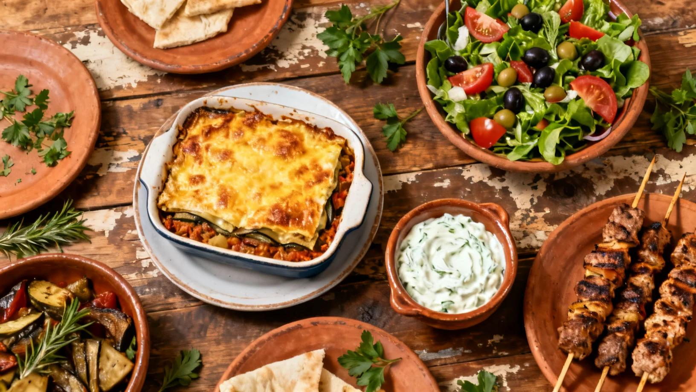
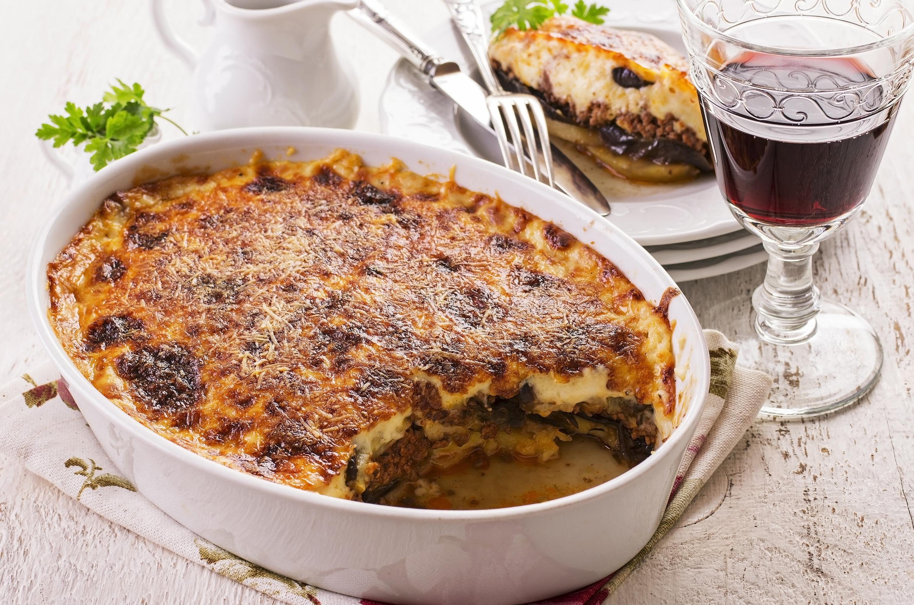
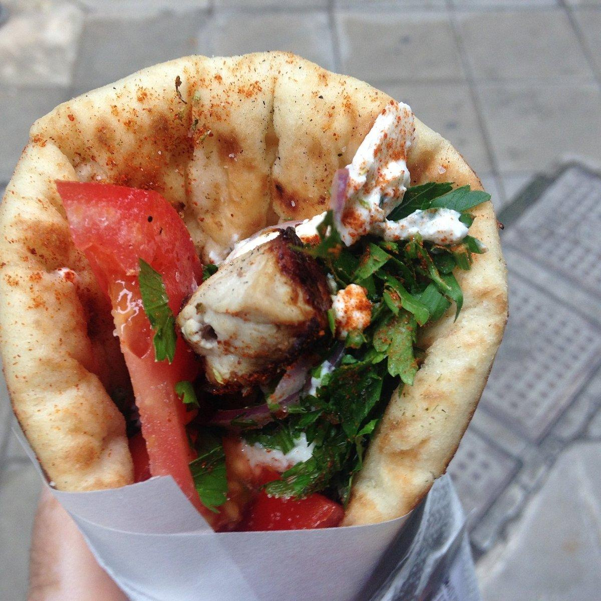

A culinária grega utiliza ingredientes como azeite de oliva, queijos, vegetais e carnes, presentes em diversos pratos tradicionais do país.

A moussaka é um dos pratos mais conhecidos da Grécia. É preparada em camadas, geralmente com berinjela, carne moída e molho branco.

O souvlaki é feito com pedaços de carne grelhados em espetos. Já a salada grega combina tomate, pepino, azeitonas e queijo feta.

VOLTA AO MUNDO